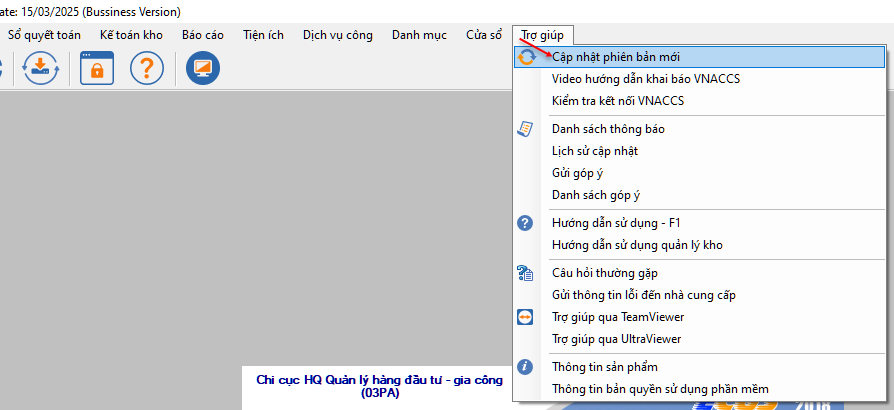
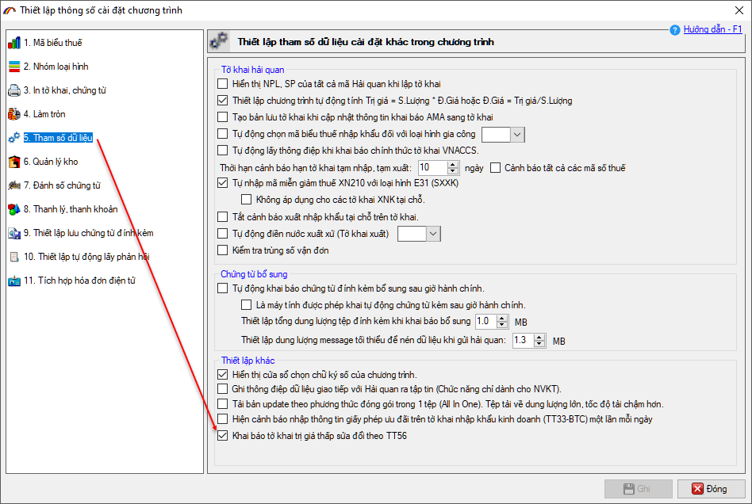

HƯỚNG DẪN KHAI BÁO TỜ KHAI TRỊ GIÁ THẤP SỬA ĐỔI THEO TT56
1. Giới thiệu
Chức năng khai báo tờ khai trị giá thấp sửa đổi theo TT56 phục vụ các doanh nghiệp chuyển phát nhanh khai báo hàng hóa nhập – xuất khẩu, với đối tượng hàng hóa là hàng bưu chính, chuyển phát nhanh hoặc hàng giao dịch qua TMĐT.
Tờ khai nhập khẩu (IMA), xuất khẩu (EMA) sử dụng thay thế tờ khai trị giá thấp MIC/MEC đang sử dụng có bổ sung thêm một số chỉ tiêu thông tin về thuế.
2. Thiết lập cấu hình sử dụng
Để sử dụng chức năng khai báo tờ khai trị giá thâp (sửa đổi theo TT56), doanh nghiệp cần thực hiện các bước theo hướng dẫn sau:
- - Bước 1: Nâng cấp phần mềm lên phiên bản mới nhất, bằng cách vào menu Trợ giúp / Cập nhật phiên bản mới:

- - Bước 2: Cấu hình hiển thị chức năng bằng cách vào menu Hệ thống / 6.Thiết lập thông số chương trình, sau đó chọn mục 5.Tham số dữ liệu ở cửa sổ mới hiện ra:

Tại đây, bạn đánh dấu tích chọn vào mục: Khai báo tờ khai trị giá thấp sửa đổi theo TT56 rồi nhấn nút Ghi để lưu lại.
- - Bước 3: Thiết lập thông số khai báo.
- Sau khi thiết lập hiển thị chức năng ở bước 2, bạn vào menu Hệ thống / 2.1.Thiết lập thông số khai báo TT56:

- Tại mục Thông tin Hải quan tiếp nhận khai báo: Bạn để địa chỉ khai báo là https://tqdtv6.customs.gov.vn và đánh dấu vào Sử dụng chữ ký số khi khai báo. Thiết lập các thông số proxy nếu mạng internet của doanh nghiệp có sử dụng proxy.
- Tại mục Thông tin tài khoản người sử dụng: Bạn nhập các thông số của tài khoản khai báo VNACCS (hệ thống tự động đồng bộ dữ liệu tài khoản người dùng từ hệ thống VNACCS nên bạn không cần phải đăng ký lại).
- Sau khi hoàn tất các bước cấu hình thiết lập, để khai báo tờ khai trị giá thấp sửa đổi theo TT56, bạn truy cập vào menu Tờ khai hải quan / Tờ khai trị giá thấp sửa đổi TT56:

3. Khai báo tờ khai nhập khẩu trị giá thấp sửa đổi theo TT56.
a) Khai báo mới tờ khai nhập khẩu – IMA
Để khai báo tờ khai nhập khẩu trị giá thấp, bạn vào menu Tờ khai hải quan / Tờ khai
trị giá thấp sửa đổi TT56, sau đó chọn Đăng ký tờ khai nhập khẩu trị giá
thấp sửa đổi TT56. Giao diện tờ khai hiện ra như sau.

Tờ khai trị giá thấp sửa đổi TT56 có rất ít thông tin, bạn nhập vào theo hướng dẫn sau, với lưu ý các chỉ tiêu thông tin có dấu * là bắt buộc
phải nhập:
Mã loại
hình: Nhập vào mã loại hình nhập khẩu A45 - Nhập khẩu hàng chuyển phát
nhanh nhóm 02.
Mã phân loại
hàng hàng: Nếu hàng hóa bưu chính, chuyển phát nhanh thì bạn chọn F. Nếu
hàng hóa giao dịch qua Thương mại điện tử thì bạn chọn J.
Thông tin
người nhập khẩu: Nhập mã số thuế của người nhập khẩu, nếu người nhập khẩu
là cá nhân thì lựa chọn nhập:
- PA1: Nhập mã “9999999999-998”
- PA2: Nhập Số định danh cá nhân
Thông tin vận đơn: Nhập vào thông tin về số vận đơn, địa điểm dỡ hàng, ngày hàng đến, địa điểm lưu kho hàng chờ thông quan dự kiến.
Thông tin
thuế và bảo lãnh: Tờ khai nhập trị giá thấp sửa đổi theo TT56 có bổ sung
thêm phần thuế, do đó doanh nghiệp khi khai báo cần nhập đầy đủ các thông tin
hóa đơn, người nộp thuế.
Danh sách
hàng tờ khai: Bạn nhập thông tin hàng hóa và lưu ý chọn mã biểu thuế nhập
khẩu, các biếu thuế và thu khác nếu có (BVMT, TTDB…)
Sau khi nhập
xong thông tin tờ khai nhập khẩu, bạn nhấn nút Ghi để lưu lại.
Thực hiện khai
báo tờ khai bằng cách nhấn vào nút Khai thông tin tờ khai (IMA) – lưu ý
đây là bản khai chính thức, không có bản khai tạm.

Thành công, hệ
thống sẽ trả về số tờ khai, bạn tiếp tục nhấn nút Lấy kết quả phân luồng,
thông quan để nhận thông báo phân luồng tờ khai.

Nếu tờ khai luồng
Vàng, Đỏ sau khi công chức hoàn thành kiểm tra hồ sơ.
- Nếu tờ khai không có thuế, tờ khai sẽ được chấp
nhận thông quan.
- Nếu tờ khai có thuế, hệ thống sẽ trả về thông
báo thuế, doanh nghiệp thực hiện nghĩa vụ nộp thuế cho tờ khai, sau đó nhận được
thông báo chấp nhận thông quan.
b) Khai báo sửa tờ khai nhập khẩu (chưa thông quan)
Sau khi tờ
khai đã khai báo nhưng chưa được chấp nhận thông quan, doanh nghiệp muốn sửa đổi
bổ sung có thể sử dụng các nút nghiệp vụ dưới đây để gọi về và khai báo sửa:
3.Lấy thông tin tờ khai để sửa (IMD)
4.Khai
thông tin tờ khai sửa (IMA01)
5.Lấy
kết quả phân luồng, thông quan sửa

4. Khai báo tờ khai xuất khẩu trị giá thấp sửa đổi
theo TT56
a) Khai báo mới tờ khai xuất khẩu – EMA
Để khai báo tờ
khai xuất khẩu trị giá thấp, bạn vào menu Tờ khai hải quan / Tờ khai
trị giá thấp sửa đổi TT56, sau đó chọn Đăng ký tờ khai xuất khẩu trị giá
thấp sửa đổi TT56. Giao diện tờ khai hiện ra như sau.

Tờ khai trị
giá thấp sửa đổi TT56 có rất ít thông tin, bạn nhập vào theo hướng dẫn sau, với
lưu ý các chỉ tiêu thông tin có dấu * là bắt buộc
phải nhập:
Mã loại
hình: Nhập vào mã loại hình nhập khẩu B14 – Xuất khẩu hàng chuyển phát
nhanh nhóm 02.
Mã phân loại
hàng hàng: Nếu hàng hóa bưu chính, chuyển phát nhanh thì bạn chọn F. Nếu
hàng hóa giao dịch qua Thương mại điện tử thì bạn chọn J.
Thông tin
người xuất khẩu: Nhập mã số thuế của người xuất khẩu, nếu người xuất khẩu
là cá nhân thì lựa chọn nhập:
- PA1: Nhập mã “9999999999-998”
- PA2: Nhập Số định danh cá nhân
Thông tin vận
đơn: Nhập vào thông tin về số vận đơn, địa điểm xếp hàng, ngày hàng đi dự
kiến, địa điểm lưu kho hàng chờ thông quan dự kiến. Với lưu ý, số vận đơn là số
khai báo định danh hàng hóa, bạn có thể đăng ký mới số định danh xuất khẩu bằng
cách nhấn nút Đăng ký (1) hoặc chọn từ danh sách đã có bằng cách nhấn nút Chọn
(2).

Danh sách
hàng tờ khai: Bạn nhập vào thông tin hàng hóa xuất khẩu, đối với tờ khai xuất
trị giá thấp sửa đổi theo TT56 sẽ không có chỉ tiêu mã số hàng hóa (Mã HS).
Sau khi nhập
xong thông tin tờ khai nhập khẩu, bạn nhấn nút Ghi để lưu lại.
Thực hiện khai
báo tờ khai bằng cách nhấn vào nút Khai thông tin tờ khai (EMA) – lưu ý
đây là bản khai chính thức, không có bản khai tạm.

Thành công, hệ
thống sẽ trả về số tờ khai, bạn tiếp tục nhấn nút Lấy kết quả phân luồng,
thông quan để nhận thông báo phân luồng, thông quan cho tờ khai.

b) Khai báo sửa tờ khai xuất khẩu (chưa thông quan)
Sau khi tờ
khai đã khai báo nhưng chưa được chấp nhận thông quan, doanh nghiệp muốn sửa đổi
bổ sung có thể sử dụng các nút nghiệp vụ dưới đây để gọi về và khai báo sửa:
3.Lấy
thông tin tờ khai để sửa (EMD)
4.Khai
thông tin tờ khai sửa (EMA01)
5.Lấy
kết quả phân luồng, thông quan sửa

Bản quyền © thuộc về Công ty TNHH Phát triển công nghệ Thái Sơn